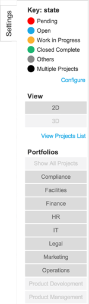

Using Timeline Visualizations
| |
Note: This article applies to Fuji and earlier releases. For more current information, see Timeline Visualizations at http://docs.servicenow.com
The ServiceNow Wiki is no longer being updated. Visit http://docs.servicenow.com for the latest product documentation. |
Contents
1 Overview
Timeline visualizations provide a high-level view of an organization's strategic and operational activities over time. Organizational decision makers can use the information in visualizations for activities such as planning future projects and estimating resource requirements. Users can personalize the information displayed with the visualization Settings pane.
Activating the Timeline Visualization application also installs the CIO Roadmap, a timeline visualization that displays an organization's IT projects and portfolios. This following sections use the CIO Roadmap to demonstrate features of timeline visualizations.
2 Viewing Timeline Visualizations
To view the CIO Roadmap timeline visualization:
- Navigate to Project > Projects > All.
- Scroll to the bottom of the list and click the Timeline Visualization related link.
By default, the CIO Roadmap opens in three-dimensional (3D) view with the current date at the forefront of the timeline. You can use the Settings pane to change between two-dimensional (2D) and 3D view. As soon as you view a timeline visualization, it is considered personalized. After that, you see your personalized view even if the timeline administrator makes changes to the default visualization.
Timeline administrators can create timeline visualizations on other tables. If you are not sure whether a timeline visualization exists for a certain application, use the application navigator to open the application of your choice, and click All. If a timeline visualization exists for the application's table, a Timeline Visualization related link appears.
3 Timeline Visualization Components
The components that appear in a timeline visualization depend on whether you are viewing it in 2D or 3D view. Components can include panels, lanes, markers, and the Settings pane.
{kind=link}
{kind=link}
3.1 Panels
A panel in 2D view always represents a single record, while panels in 3D view may represent one or more records. Panels in both views are color coded according to values that the administrator selects during the initial setup.
{kind=link}
{kind=link}
In 2D view, panels are grouped by month and stacked in chronological order, from the earliest date to the latest date. By default, the 2D view opens with the current month displayed on the left side of the visualization. You can print visualizations from the 2D view using the browser's print option. In 3D view, panels are grouped in lanes and ordered by date, from earliest to latest. The date that appears on the panel determines its placement in 2D and 3D view. The date displayed is based on a value the timeline administrator selects during initial setup.
Panels appear in the CIO Roadmap according to the planned completion date for the project. In 3D view, projects with the same planned date of completion are consolidated into a single panel. In 2D view, projects with the same planned date of completion are displayed as individual panels.
Panel headers in the CIO Roadmap are color coded based on project state. However, in 3D view, if a panel represents more than one project, the panel header is colored black. The Settings pane contains a key showing each available project state and the corresponding color.
3.1.1 Viewing Panel Summary Information
To view additional information about a panel:
- Click a panel for a single record while in 2D or 3D view to open a summary window that contains additional information. Click the heading in the summary window to open the full record.
- Click a panel that represents multiple records to open a list of those records. Click a record number to open the full record.
The timeline administrator can configure the information that appears in summary windows.
3.2 Lanes
Lanes appear in 3D view only. A visualization can display up to eight lanes at a time. While viewing a visualization, you can use the Settings pane to show or hide individual lanes.
3.3 Markers
Markers are horizontal lines that cross all lanes and identify a transition to the next month. They appear in 3D view only.
3.4 Settings Pane
The Settings pane appears in both the 2D and 3D views. Element names in the Settings pane vary based on the table and fields used to create the visualization.
The Settings pane contains the following elements:
|  |
|
{kind=link}
4 Working with Timeline Visualizations
There are various tools that allow you to move visualizations backward and forward in time depending on whether you are in 2D or 3D view.
4.1 2D Views
The following options are available for navigating between months.
- Dragging: Hold down the left mouse button and drag the slider track right or left to view other months.
- Left and right arrow keys: Press the left or right arrow keys on the keyboard to move the timeline forward or backward.
- Mouse wheel button: Scroll the wheel to move the timeline forward or backward.
- Right and left navigation arrows: Click the arrows to move from month to month. Arrows do not appear if there are no additional months to view.
The following options are available for navigating stacked panels.
- Dragging: Hold down the left mouse button and drag the stack up or down to view other panels.
- Up and down navigation arrows: Click the arrows in a stack to view additional panels for the same month. Arrows do not appear if there are no additional panels to view.
4.2 3D Views
The following options are available for navigating in 3D view.
- Dragging: Hold down the left mouse button and drag the slider along the slider track to move the timeline forward or backward.
- Mouse wheel button: Scroll the wheel to move the timeline forward or backward.
- Up and down arrow keys: Press the arrow keys to move the timeline forward or backward.
4.3 Using the Slider and Slider Track
The slider and slider track are useful for quickly navigating to any point in time on a visualization. For the CIO Roadmap, the slider track allows you to quickly view the distribution of projects over time and determine project states. While in 3D view, click and drag the slider to move the timeline forward or backward. In 2D view, click and drag the slider track right or left to move the timeline forward or backward.
The slider track provides an alternative view of panels on a visualization. For the CIO Roadmap, a colored dot in the slider track indicates the presence of one or more projects for a given day. The different dot colors correspond to different project states. This allows you to scan the slider track to identify projects of interest by their color, and then use the slider or slider track to quickly navigate to those projects. For example, if you are interested in projects that are in a pending state, you can use the slider to navigate to the colored dots that represent that state.
| |
Note: Dots in the slider track do not correspond one-to-one with panels in a visualization. A dot represents the presence of one or more projects on a given date. In 3D view, if there is more than one project for a given day, all of the projects for that day are combined into a single panel on the roadmap. When the slider track is populated, projects in a multi project panel are analyzed for project state and then represented as appropriately colored dots in the slider track. |
Similarly, you can use the slider or slider track in conjunction with the calendar to quickly navigate to any point in time. For example, if you are concerned about resource issues in April 2014 because you see a large cluster of dots during that time, dragging the slider or slider track to those dots brings those projects into view. Click the individual panels to view additional information.
5 Personalizing Timeline Visualizations
To personalize a timeline visualization, open the Settings pane and click Configure. Complete the form as appropriate (see table).
{kind=link}
| Field | Description |
|---|---|
| Lane conditions | Condition builder used to create filters and apply sorting to values that are used as lanes in 3D view visualizations. For example, if you set [Name] [is not] [IT] as a lane condition for the CIO Roadmap, then IT no longer appears as a lane in the roadmap, nor does it appear as a lane option in the Settings pane. Removing the filter restores the IT lane to the visualization and to lane options in the Settings pane.
To order the results, specify sorting based on relevant field names. For example, to order the portfolio names so that they appear in reverse alphabetical order on the CIO Roadmap, set the sort fields to [Name] [z to a]. |
| Panel conditions | Condition builder used to create filters and apply sorting to values that are used as panels in the visualization. For example, if you set [State] [is one of] [Pending, Open, Work in Progress] as the panel condition for the CIO Roadmap, only projects that are in one of those states appear on the roadmap. |
| Panel color key | Field from the Panel table that contains values used for color coding the information displayed. The field selected here determines the values that are available in the Label fields on the form.
The CIO Roadmap uses State, which is a field in the Project table. Panels on the CIO Roadmap are color coded according to the project state, which can be Pending, Open, Work in Progress, Closed Complete, Closed Incomplete, and Skipped. Examples of other fields that are suitable for this selection include Priority, Risk, and Approval. |
|
Label 1 |
Values to be color coded. The values available are determined by the Panel color key field. For example, the CIO Roadmap is based on the Project table and has the Panel color key' set to the State field, which contains the values Pending, Open, Work in Progress, Closed Complete, Closed Incomplete, and Closed Skipped.
You can set set specific colors for up to four values from the selected field. Other values are shown in the Default color. |
| Default color | Color applied to values that are not selected for labels. For example, the CIO Roadmap color codes and creates labels for the values Pending, Open, Work in Progress, and Closed Complete. The additional values, Closed Incomplete and Closed Skipped, use the default color. |
|
Color 1 |
Colors that correspond to each of the Label field values. For example, if Label 1 is the Pending state, and Color 1 is red, then panels for projects in the pending state are red. |